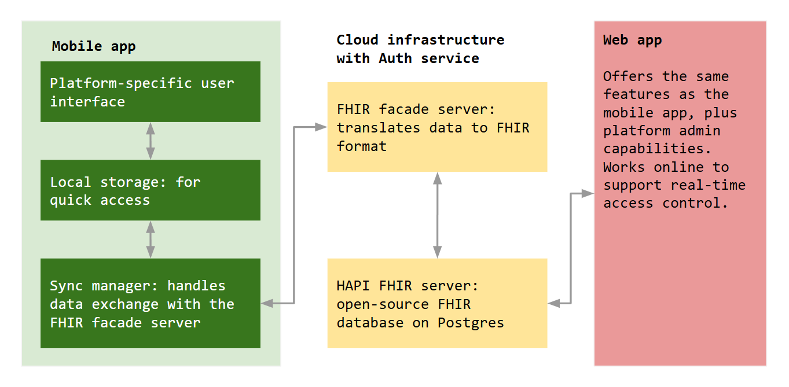

What is Agni?
What is Agni?
Agni is a mobile-first software platform that supports population-scale healthcare delivery.

KEY FEATURES
Designed for primary healthcare

USER STORIES
Insights from the patient's viewpoint

TRY IT OUT
Download the Android app
Open-source code repositories
All of our repositories are in the public domain.
- Website content and issue tracking: https://github.com/LatticeInnovations/agni-main
- Android client: https://github.com/LatticeInnovations/agni-android
- Facade server: https://github.com/LatticeInnovations/agni-facade
The Facade server interfaces with a plain vanilla HAPI FHIR server, version 6.6.0, which stores data on a PostgreSQL database.
Motivation
Specialized, facility-based healthcare presents an attractive market for health technology providers—as evidenced by the many hospital information management systems (HIMS) available today. In contrast, digital platforms for primary care are far fewer.
Primary care cannot function using a watered-down HIMS. Even though its clinical complexity is lower than that of tertiary care, primary care has its own set of needs—such as the ability to function when offline. Addressing such needs requires a first-principles approach. Furthermore, platforms for primary care have to serve a public health function. Therefore, they need to be open and transparent.
Openness means it must be capable of incorporating protocols and procedures based on the needs of the health system.
Transparency means that its inner workings must be visible, and that it is externally verifiable—particularly when it comes to verifying how confidential health data is secured.
Both openness and transparency demand a standards-based approach. They also require—in our opinion—an open-source approach.
Agni is our attempt at applying first-principles to design and engineer a platform that is open-source, standards-based, and offline-capable. It is mobile-first: we did not want access to software to be limited by access to hardware.
Who are we? We are Lattice Innovations, a healthcare technology consulting and design firm based in Delhi, India.
What is Agni?
Agni is a mobile-first platform that:
- is designed for offline use,
- uses evidence-based guidelines for clinical workflows,
- is built on HL7® FHIR®, with out-of-the-box interoperability, and
- provides APIs that can connect with DHIS-2 and other dashboards.
The system utilizes the WHO’s PEN protocols for cardiovascular disease (CVD) risk assessment1, and the Indian Academy of Pediatrics' immunization recommendations2. Along with its focus on cardiac health and immunization, it provides a complete primary care workflow.
Components
The primary worker is the mobile app. It stores data locally on a lightweight database, and syncs with the HAPI FHIR server via a FHIR facade server. We are also developing a web app that provides all the functionality that the app provides, plus platform administration capabilities.

Why call it Agni?
The name Agni is inspired by two paradigms—old and new, Eastern and Western.
The first paradigm comes from the ancient system of Ayurveda. In it, Agni represents our metabolic processes—a system that needs to be in harmony to ensure health, not just remediation of disease. This focus of wellness, not just illness, is what we hope to support with our work.
The second paradigm is contemporary—the HL7® fast health interoperability resources, or FHIR®. Pronounced “fire”, which translates to Agni in many Indian languages, FHIR specifies how to structure health data, to make it easy to comprehend and exchange. Over the past decade, it has emerged as the de facto open-source standard for health data, with a global community of developers and advocates. We have built on the work done by this community, and seek to contribute our learnings to it.
Upcoming enhancements
Our vision of a digital system is one that connects beneficiaries to healthcare professionals and the public health system, eliminates waste, and enables flow. We have started with workflows for primary health centers (PHCs). We plan to enhance features for PHCs, and add features targeted at community health workers (CHWs)—starting with offering more screening algorithms.
We have also prototyped fully offline peer-to-peer communication within PHC, connecting all workstations—front office, consultation, nursing, pharmacy and lab—without the need for an internet connection or a router. We will incorporate this capability into Agni based on end-user feedback.
Legalese
Limitation of liability
This website is provided “as is”, without warranty of any kind, express or implied, including but not limited to the warranties of merchantability, fitness for a particular purpose and noninfringement. In no event shall the authors or copyright holders be liable for any claim, damages or other liability, whether in an action of contract, tort or otherwise, arising from, out of or in connection with the website or the use or other dealings in the website.
Disclaimer
- HL7® and FHIR® are registered trademarks of Health Level Seven International. HAPI FHIR (https://hapifhir.io/) in an open-source implementation of FHIR in Java. This website is unaffiliated with HL7, FHIR, or HAPI FHIR.
- We utilize publications from the public domain, from entities such as the World Health Organization, and the Indian Association of Pediatrics. We are unaffiliated with such agencies.
Image credits
We are glad that a resource like Unsplash exists. Here are links to the photos we used on this page:
-
HEARTS: Risk-based CVD management, Annex 2 and 3: WHO CVD risk charts; World Health Organization, 2020; ISBN 978-92-4-000136-7.
-
Kasi SG et al, IAP ACVIP: Recommended Immunization Schedule (2020-21) and Update on Immunization for Children 0-18 Years; Indian Pediatrics 45 58(45): 2021 Jan; PII:S097475591600258